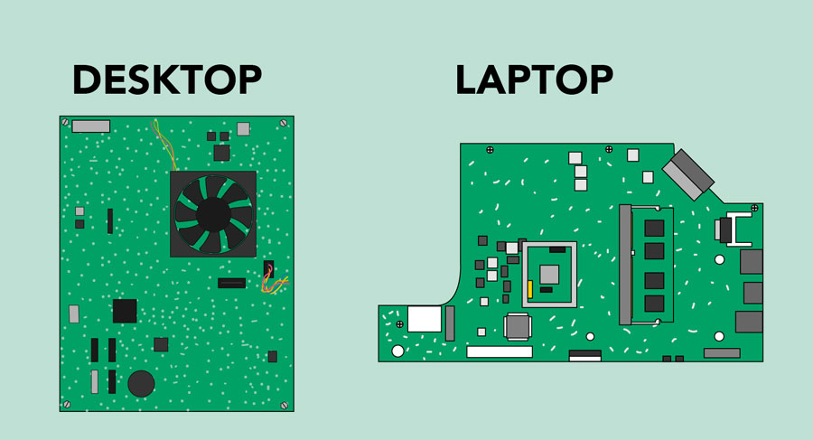

Lesson 4: Buttons and Ports on a Computer
/en/computerbasics/basic-parts-of-a-computer/content/
Introduction
Take a look at the front and back of your computer case and count the number of buttons, ports, and slots you see. Now look at your monitor and count any you find there. You probably counted at least 10, and maybe a lot more.
Each computer is different, so the buttons, ports, and sockets will vary from computer to computer. However, there are certain ones you can expect to find on most desktop computers. Learning how these ports are used will help whenever you need to connect something to your computer, like a new printer, keyboard, or mouse.
Watch the video below to learn about the buttons, ports, and slots on a desktop computer.
Looking for the old version of this video? You can still view it here.
Front of a computer case
Click the buttons in the interactive below to become familiar with the front of a computer.
Optical Disc Drive
Often called a CD-ROM or DVD-ROM drive, this lets your computer read CDs and DVDs.
Power Button
The power button is used to power the computer on and off.
Audio In/Audio Out
Many computers include audio ports on the front of the computer case that allow you to easily connect speakers, microphones, and headsets without fumbling with the back of the computer.
USB (Universal Serial Bus) Port
Most desktop computers have several USB ports. These can be used to connect almost any type of device, including mice, keyboards, printers, and digital cameras. They will often appear on the front and back of the computer.
Back of a computer case
The back of a computer case has connection ports that are made to fit specific devices. The placement will vary from computer to computer, and many companies have their own special connectors for specific devices. Some of the ports may be color coded to help you determine which port is used with a particular device.
Click the buttons in the interactive below to become familiar with the back of a computer.
Audio In/Audio Out
Almost every computer has two or more audio ports where you can connect various devices, including speakers, microphones, and headsets.
Monitor Port
This is where you'll connect your monitor cable. In this example, the computer has both a DisplayPort and a VGA port. Other computers may have other types of monitor ports, such as DVI (digital visual interface) or HDMI (high-definition multimedia interface).
USB Ports
On most desktop computers, most of the USB ports are on the back of the computer case. Generally, you'll want to connect your mouse and keyboard to these ports and keep the front USB ports free so they can be used for digital cameras and other devices.
Ethernet Port
This port looks a lot like the modem or telephone port, but it is slightly wider. You can use this port for networking and connecting to the Internet.
PS/2
These ports are sometimes used for connecting the mouse and keyboard. Typically, the mouse port is green and the keyboard port is purple. On new computers, these ports have been replaced by USB.
Serial Port
This port is less common on today's computers. It was frequently used to connect peripherals like digital cameras, but it has been replaced by USB and other types of ports.
Expansion Slots
These empty slots are where expansion cards are added to computers. For example, if your computer did not come with a video card, you could purchase one and install it here.
Power Socket
This is where you'll connect the power cord to the computer.
Other types of ports
There are many other types of ports, such as FireWire, Thunderbolt, and HDMI. If your computer has ports you don't recognize, you should consult your manual for more information.
Now you try it! Practice connecting the cables with the interactive game below.
Peripherals you can use with your computer
The most basic computer setup usually includes the computer case, monitor, keyboard, and mouse, but you can plug many different types of devices into the extra ports on your computer. These devices are called peripherals. Let's take a look at some of the most common ones.
- Printers: A printer is used to print documents, photos, and anything else that appears on your screen. There are many types of printers, including inkjet, laser, and photo printers. There are even all-in-one printers, which can also scan and copy documents.
- Scanners: A scanner allows you to copy a physical image or document and save it to your computer as a digital (computer-readable) image. Many scanners are included as part of an all-in-one printer, although you can also buy a separate flatbed or handheld scanner.
- Speakers/headphones: Speakers and headphones are output devices, which means they send information from the computer to the user—in this case, they allow you to hear sound and music. Depending on the model, they may connect to the audio port or the USB port. Some monitors also have built-in speakers.
- Microphones: A microphone is a type of input device, or a device that receives information from a user. You can connect a microphone to record sound or talk with someone else over the Internet. Many laptop computers come with built-in microphones.
- Web cameras: A web camera—or webcam—is a type of input device that can record videos and take pictures. It can also transmit video over the Internet in real time, which allows for video chat or video conferencing with someone else. Many webcams also include a microphone for this reason.
- Game controllers and joysticks: A game controller is used to control computer games. There are many other types of controllers you can use, including joysticks, although you can also use your mouse and keyboard to control most games.
- Digital cameras: A digital camera lets you capture pictures and videos in a digital format. By connecting the camera to your computer's USB port, you can transfer the images from the camera to the computer.
- Mobile phones, MP3 players, tablet computers, and other devices: Whenever you buy an electronic device, such as a mobile phone or MP3 player, check to see if it comes with a USB cable. If it does, this means you can most likely connect it to your computer.
/en/computerbasics/inside-a-computer/content/
Lesson 5: Inside a Computer
/en/computerbasics/buttons-and-ports-on-a-computer/content/
Inside a computer
Have you ever looked inside a computer case, or seen pictures of the inside of one? The small parts may look complicated, but the inside of a computer case isn't really all that mysterious. This lesson will help you master some of the basic terminology and understand a bit more about what goes on inside a computer.
Watch the video below to learn about what's inside a desktop computer.
Looking for the old version of this video? You can still see it here:
Motherboard

The motherboard is the computer's main circuit board. It's a thin plate that holds the CPU, memory, connectors for the hard drive and optical drives, expansion cards to control the video and audio, and connections to your computer's ports (such as USB ports). The motherboard connects directly or indirectly to every part of the computer.
CPU/processor
The central processing unit (CPU), also called a processor, is located inside the computer case on the motherboard. It is sometimes called the brain of the computer, and its job is to carry out commands. Whenever you press a key, click the mouse, or start an application, you're sending instructions to the CPU.
The CPU is usually a two-inch ceramic square with a silicon chip located inside. The chip is usually about the size of a thumbnail. The CPU fits into the motherboard's CPU socket, which is covered by the heat sink, an object that absorbs heat from the CPU.
A processor's speed is measured in megahertz (MHz), or millions of instructions per second; and gigahertz (GHz), or billions of instructions per second. A faster processor can execute instructions more quickly. However, the actual speed of the computer depends on the speed of many different components—not just the processor.
RAM (random access memory)
RAM is your system's short-term memory. Whenever your computer performs calculations, it temporarily stores the data in the RAM until it is needed.
This short-term memory disappears when the computer is turned off. If you're working on a document, spreadsheet, or other type of file, you'll need to save it to avoid losing it. When you save a file, the data is written to the hard drive, which acts as long-term storage.
RAM is measured in megabytes (MB) or gigabytes (GB). The more RAM you have, the more things your computer can do at the same time. If you don't have enough RAM, you may notice that your computer is sluggish when you have several programs open. Because of this, many people add extra RAM to their computers to improve performance.
Hard drive
The hard drive is where your software, documents, and other files are stored. The hard drive is long-term storage, which means the data is still saved even if you turn the computer off or unplug it.
When you run a program or open a file, the computer copies some of the data from the hard drive onto the RAM. When you save a file, the data is copied back to the hard drive. The faster the hard drive, the faster your computer can start up and load programs.
Power supply unit
The power supply unit in a computer converts the power from the wall outlet to the type of power needed by the computer. It sends power through cables to the motherboard and other components.
If you decide to open the computer case and take a look, make sure to unplug the computer first. Before touching the inside of the computer, you should touch a grounded metal object—or a metal part of the computer casing—to discharge any static buildup. Static electricity can be transmitted through the computer circuits, which can seriously damage your machine.
Expansion cards
Most computers have expansion slots on the motherboard that allow you to add various types of expansion cards. These are sometimes called PCI (peripheral component interconnect) cards. You may never need to add any PCI cards because most motherboards have built-in video, sound, network, and other capabilities.
However, if you want to boost the performance of your computer or update the capabilities of an older computer, you can always add one or more cards. Below are some of the most common types of expansion cards.
Video card
The video card is responsible for what you see on the monitor. Most computers have a GPU (graphics processing unit) built into the motherboard instead of having a separate video card. If you like playing graphics-intensive games, you can add a faster video card to one of the expansion slots to get better performance.
Sound card
The sound card—also called an audio card—is responsible for what you hear in the speakers or headphones. Most motherboards have integrated sound, but you can upgrade to a dedicated sound card for higher-quality sound.
Network card
The network card allows your computer to communicate over a network and access the Internet. It can either connect with an Ethernet cable or through a wireless connection (often called Wi-Fi). Many motherboards have built-in network connections, and a network card can also be added to an expansion slot.
Bluetooth card (or adapter)
Bluetooth is a technology for wireless communication over short distances. It's often used in computers to communicate with wireless keyboards, mice, and printers. It's commonly built into the motherboard or included in a wireless network card. For computers that don't have Bluetooth, you can purchase a USB adapter, often called a dongle.
/en/computerbasics/laptop-computers/content/